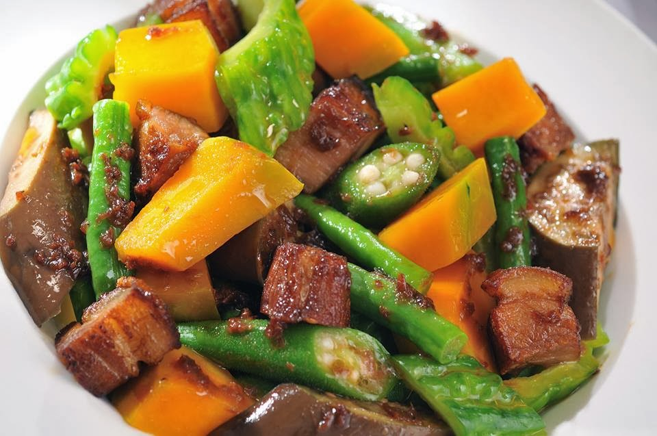

Pinakbet Recipe

Description:
Pinakbet is a traditional Filipino dish made with a combination of vegetables, shrimp paste (bagoong),
and sometimes meat. It's a flavorful and nutritious dish that showcases the variety of vegetables available
in Filipino cuisine. Here's a classic Pinakbet recipe:
Ingredients:
- 1/4 cup cooking oil
- 1 onion, sliced
- 3 cloves garlic, minced
- 1 tomato, sliced
- 1/4 cup bagoong (shrimp paste)
- 1 cup pork belly or pork shoulder, cubed (optional)
- 1 cup shrimp, peeled and deveined (optional)
- 2 cups water or broth
- 1 medium eggplant, sliced into rounds
- 1 bitter melon (ampalaya), sliced and deseeded
- 1 cup squash or pumpkin, peeled and cubed
- 1-2 pieces long beans (sitaw), cut into 2-inch pieces
- 1-2 pieces okra, sliced diagonally
- Salt and pepper to taste
Steps:
- Prepare the Vegetables:
- Wash and prepare all the vegetables according to the specifications mentioned in the ingredients list.
- Saute Aromatics:
- In a large pot or wok, heat the cooking oil over medium heat. Saute the onions until translucent.
- Add the minced garlic and saute until fragrant.
- Add the sliced tomatoes and cook until they soften.
- Add Pork (Optional):
- If using pork, add the pork cubes to the pot and cook until lightly browned.
- Add Shrimp (Optional):
- If using shrimp, add the shrimp to the pot and cook until they turn pink. Remove the shrimp and set them aside.
- Add Shrimp Paste:
- Add the bagoong (shrimp paste) to the pot.
Mix well with the aromatics and meat. Allow it to cook for a minute or two to release its flavors.
- Add Water or Broth:
- Pour in the water or broth. Bring the mixture to a simmer.
- Add Vegetables:
- Add the eggplant, bitter melon, squash, long beans, and okra to the pot.
Stir to combine with the other ingredients.
- Simmer:
- Cover the pot and let the vegetables simmer over medium heat until they are tender.
Stir occasionally to prevent sticking.
- Adjust Seasoning:
- Season the Pinakbet with salt and pepper to taste. The bagoong is salty, so adjust the salt accordingly.
- Add Shrimp (if set aside):
- If you set aside shrimp earlier, add them back to the pot just before the vegetables are fully cooked.
This will prevent overcooking the shrimp.
- Serve:
- Once the vegetables are tender and the flavors have melded, remove the pot from the heat.
- Serve the Pinakbet hot with steamed rice.
Enjoy the delightful blend of flavors in this classic Filipino Pinakbet recipe.
You can adjust the combination of vegetables and meats to suit your preferences.